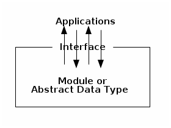
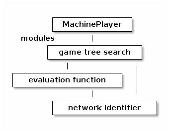

notes18
Table of Contents
Lecture 18
Today's reading: Sierra & Bates, pp. 80-84.
ENCAPSULATION
A module is a set of methods that work together as a whole to perform some task or set of related tasks. A module is encapsulated if its implementation is completely hidden, and it can be accessed only through a documented interface.
As you know, an abstract data type (ADT) is an encapsulated data structure. Not all encapsulated modules are ADTs, though. Algorithms (like list sorters) and applications (like network routing software) can also be encapsulated, even if they are distinct from the data structures they use.
So far, I've discussed encapsulation as a way of preventing "evil tamperers" from corrupting your data structures. Who are these evil tamperers? Sometimes, they're your coworkers, or other programmers who will work on a project long after you're gone. Often the evil tamperer is you.
A Cautionary Tale
Doug Whole, a programmer at a Silicon Valley startup, implements a singly- linked list much like the one you used in Homework 3, but all its fields are public. Doug also writes application code that uses linked lists. One day, Doug needs to write code that splices the second node out of a list. It would only take one line, and he doesn't foresee ever needing to use the same operation anywhere else. Being lazy, Doug doesn't feel like adding a new method to the List class. Instead, he just does the work directly.
public class ListMangler { [lotsa code] /* Gosh, I am sooooooooooooooooooo tired. */ list.head.next = list.head.next.next; [lotsa more code] }
Two years later, another programmer, Jeannie Yess, decides to improve the speed of their list data structure. After careful thought, she decides to reprogram the List class so that it uses doubly-linked lists internally. A "previous" field is added to ListNode, and the List methods are rewritten.
Jeannie tests her new List implementation extensively, and can find no bugs. But when she replaces Doug's List class with her own, the company's landmark ListMangler application repeatedly produces the wrong results. After two long days of debugging, Jeannie discovers the culprit: Doug's single line of code.
This kind of bug is one of the most difficult to find and fix. It's also very common in commercial software systems, and it can have far-reaching effects.
You see, Doug's line of code is not the only one that reads or modifies the list data structure directly. Jeannie still has to debug 100,000 lines of Doug's code in other failing applications, as well as 500,000 lines more written by other programmers who also directly manipulated ListNodes. The List improvement project is abandoned.
A Remedy: Encapsulation
You "encapsulate" a module by defining an interface through which the outside world can use, inspect, or manipulate it. Recall that the interface is the set of prototypes and behaviors of the methods (and sometimes fields) that access the module or data structure.
Think of a module or an ADT as a closed box. Data can ONLY go in and out through the interface. Other attempts to access the internals of the module or ADT are outlawed.

Why encapsulation is your friend:
- The implementation is independent of the functionality. A programmer who has the documentation of the interface can implement a new version of the module or ADT independently. A new, better implementation can replace an old one.
- Encapsulation prevents Doug from writing applications that corrupt a module's internal data. In real-world programming, encapsulation reduces debugging time. A lot.
- ADTs can guarantee that their invariants are preserved.
- Teamwork. Once you've rigorously defined interfaces between modules, each programmer can independently implement a module without having access to the other modules. A large, complex programming project can be broken up into dozens of pieces.
- Documentation and maintainability. By defining an unambiguous interface, you make it easier for other programmers to fix bugs that arise years after you've left the company. Many bugs are a result of unforeseen interactions between modules. If there's a clear specification of each interface and each module's behavior, bugs are easier to trace.
- When your Project 2 doesn't work, it will be easier to figure out which teammate to blame.
An interface is a CONTRACT between module writers, specifying exactly how they will communicate.
Enforcing Encapsulation
Many languages offer only one construct for enforcing the encapsulation of ADTs: self-discipline.
As we've seen, Java offers facilities that fortify your self-discipline, especially Java packages and the "private", package, and "protected" modifiers for field and method declarations.
Java's facilities aren't always enough, though. There are circumstances in which you'll want to have multiple modules in the same package. For instance, in Project 2 it would be reasonable to put all your modules in the "player" package. If you do that, you'll have to fall back on self-discipline. This means defining your modules and interfaces before you start programming, and resisting the temptation to let one module snoop through or change another module's data structures.
One way to find this self-discipline is, wherever one module uses another, to have a different team member work on each module. If neither team member reveals their code to the other, it's much harder to yield to temptation.
Modules and Interfaces in Project 2
In Project 2, you are required to divide the programming task into modules, define interfaces between them, and document these interfaces in your GRADER file, before you start programming. This will allow you to work as a team.
The game-playing program you will write for Project 2 can easily be broken down into a number of modules. Four likely examples are illustrated at right. Your MachinePlayer, its game tree search (with alpha-beta pruning), the board evaluation function, and the module that identifies winning networks can all be implemented completely independently, even though they will ultimately work together.

You should probably break your MachinePlayer down into a few more modules than this (the project README gives a few more suggestions), but don't try to break it up too much. You will reach a point where it is no longer possible to subdivide any module into pieces that are independent and communicate through simple interfaces.
You might still be confused: what exactly is a module? It's a collection of methods that provide some functionality through a single (hopefully elegant) interface. The main difference between a module and a class is this:
- A module is organized around the functionality it provides.
- A class is organized around a data storage unit. (Remember that an object is a repository of data.)
The concept of modules is a bit abstract for several reasons.
- A module can be made up of several classes, or a class could be made up of several modules. Module boundaries and class boundaries can be independent of each other. o Why would a module have several classes? Because it might implement a data structure made up of several classes of objects. For example, a List ADT has a list object and node objects. A Graph ADT has a graph object, vertices, and edges. o Why would a class have several modules? Because a single class of object might support many independent operations. The game tree search and the evaluation function above both operate on a Network game board, but they are independent enough of each other that you could change the implementation of one without changing the other. (Of course, if you change the way a game board is represented, you'll have to change both implementations.)
- A module may include many methods, or as few as one. (But not every method needs its own module!)
- A package may contain one module or many.
For Project 2, you should document your modules and interfaces as follows.
- List the modules.
- For each module, specify its interface. o Recall that an interface includes the prototype(s) for the methods by which the module can be called. This list does not necessarily include all the methods in the module! It only includes the methods that are available for external callers (outside the module). o An interface also includes, for each prototype, a comment that describes precisely the module's behavior from an external observer's point of view. Your description does not need to state how the module is implemented, though. For instance, a module that does game tree search should say that it returns a good, legal move, but it does not need to say that it does alpha-beta pruning. (It's not forbidden to say this, though.) Likewise, you should state that the "network identifier" determines whether a game board contains a winning network for a given player, but the interface does not need to specify what algorithm is used to look for winning networks. (A description of the algorithm should be included in the comments in the implementation, but it is not part of the interface.) o The behavior comment should also describe, for each prototype, every parameter and the return value (if any), and how they are interpreted. Here you are making a contract that your module will speak a certain language when it communicates with external callers.
Here's a short example of an interface you might put in your GRADER file. (You are not required to implement it this way; this is just an example. Other modules will probably require longer behavioral descriptions.)
/** * hasValidNetwork() determines whether "this" GameBoard has a valid network * for player "side". (Does not check whether the opponent has a network.) * A full description of what constitutes a valid network appears in the * project "readme" file. * * Unusual conditions: * If side is neither MachinePlayer.COMPUTER nor MachinePlayer.OPPONENT, * returns false. * If GameBoard squares contain illegal values, the behavior of this * method is undefined (i.e., don't expect any reasonable behavior). * * @param side is MachinePlayer.COMPUTER or MachinePlayer.OPPONENT * @return true if player "side" has a winning network in "this" GameBoard; * false otherwise. **/ protected boolean hasValidNetwork(int side)
Your description of how a module behaves should be complete and unambiguous, and should take into account unusual and erroneous inputs and circumstances. (It's sometimes okay if your module doesn't handle an erroneous input well, but you should document that.) When you and your partners are writing the interfaces for each module, think carefully about whether you believe these interfaces will really allow all the modules to do everything they need to do.
When you design your interfaces, they should appear (prototypes and behavioral descriptions both) in both the GRADER file and in the code itself. Once you've finished, decide which team members will implement which modules, and start programming.
You may find your team returning to modify the interfaces after a first attempt at programming, but that's okay. Just be sure to change the documentation (in both GRADER and the code comments) to reflect your new design decisions.
I recommend you write a draft of your interfaces this week so you'll have lots of time to program. The interfaces in the GRADER file are worth 10% of your project score. You will need to show them to your TA next week in Lab 8.